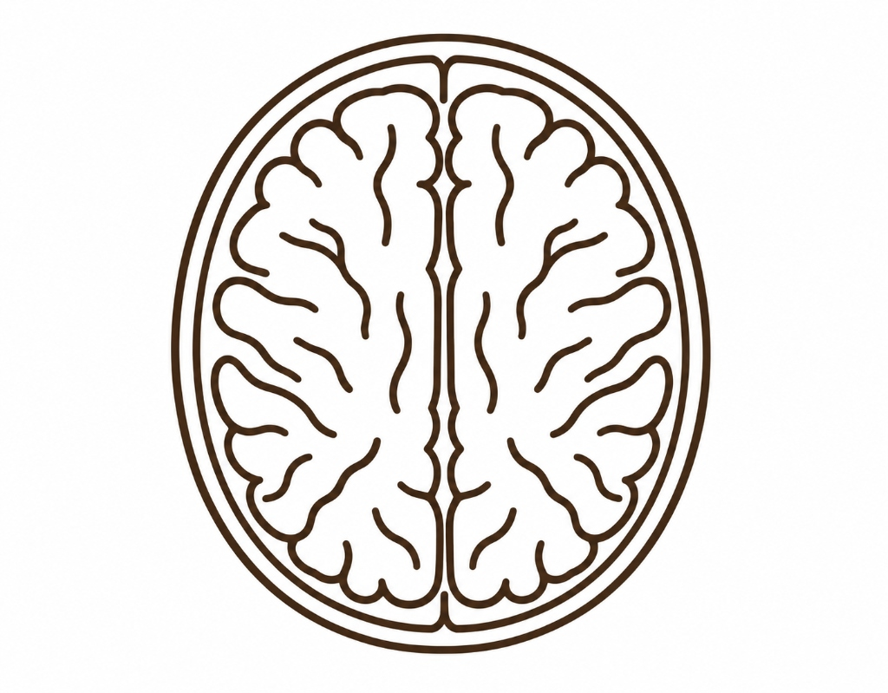

Rapid Detection.
Preserved Brain.
Neuriva delivers clinical-grade automated ASPECTS scoring to emergency stroke triage — offline, fully explainable, and radiologist-verified.

Non-Contrast CT Analysis
Automated detection of MCA hypodensity, dynamic silhouette midline registration, and 10-point ASPECTS scoring with zero cloud latency.
What Neuriva Analyses
Comprehensive, explainable clinical features engineered for emergency ER stroke triage
Parenchymal Isolation
Calibrated dual-Otsu thresholding strips background air and dense cranial bone, isolating pure brain tissue without skull contamination.
Silhouette Midline Registration
Dynamically locks onto the interhemispheric fissure via silhouette reflection search. Completely invariant to patient head tilt or horizontal offset.
Contralateral Differencing
Measures subtle hypodensity across mirrored hemispheres with an absolute noise floor, catching early ischemic cytotoxic edema.
Topographic ASPECTS Scoring
Conforms strictly to 10-point Alberta Stroke criteria. Deducts points only when regional parenchymal loss exceeds 5%.
Explainable Mind Map Tree
Hierarchical evidence breakdown for Deep Subcortical Core and Cortical Convexity with estimated Hounsfield Units and functional deficit notes.
100% Offline & DICOM Ready
Runs locally on hospital machines with full 16-bit DICOM (.dcm) ingestion, true Hounsfield Unit scaling, and stroke windowing (WW=80, WL=40).
Diagnostic Triage Console
Patient Information
NCCT Scan Ingestion
Drop brain CT image or DICOM here
or click to browse local files
Browse FilesAccepted: DICOM (.dcm), PNG, JPG • Max 50 MB
• Stroke windowing: WW=80, WL=40 HU. 16-bit DICOM calibrated automatically.
PACS Viewport
Midline x=256Automated topographic evaluation based on quantitative tissue attenuation.
Territorial Mind Map
Hover or click any territory to inspect volumetric evidence.
Displays tissue loss %, estimated Hounsfield attenuation (edema vs. normal), and anatomical landmark.
Clinical Evidence & Guideline Alignment
Neuriva is designed in strict adherence to published stroke imaging literature and clinical trial protocols.
ASPECTS-281 NCCT Atlas
Standardized multi-cohort anatomical templates across 281 patients for age-stratified MCA territory boundary demarcation.
Neuriva Integration: Defines our calibrated stereotactic coordinates for deep nuclei (Caudate, Lentiform, Internal Capsule, Insula) and radial sweeps along the outer parenchymal ribbon (M1–M3).
Clinical Value: Eliminates subjective territory boundary guesswork across patients with varied cranial vault shapes and age-related brain atrophy.
Automated Triage Concordance
Matches expert neuroradiologist consensus scoring with established intraclass correlation (ICC ~0.71) in acute window evaluation.
Neuriva Integration: Validates our strict 5% relative territorial involvement threshold (`overlap / area > 0.05`), which matches the neuroradiologist scoring standard and discards sub-threshold speckle.
Clinical Value: Prevents emergency room misdiagnoses where exhausted non-radiologist ER physicians disagree up to 30% of the time on subtle hypodense tissue changes.
DAWN & DEFUSE-3 Windows
Non-prescriptive decision support for mechanical thrombectomy qualification in patients presenting within extended 6 to 24-hour windows.
Neuriva Integration: Categorizes scores into clinical severity bands (≥6 = Favorable Ischemic Profile; <6 = Extensive Infarction with elevated reperfusion hemorrhage risk).
Clinical Value: Provides essential decision guardrails for endovascular thrombectomy (EVT) candidate evaluation without overriding physician autonomy.
Neuriva does not substitute for clinical judgment or autonomous medical diagnosis. All automated scores and visual contours require verification by a board-certified radiologist or stroke neurologist.